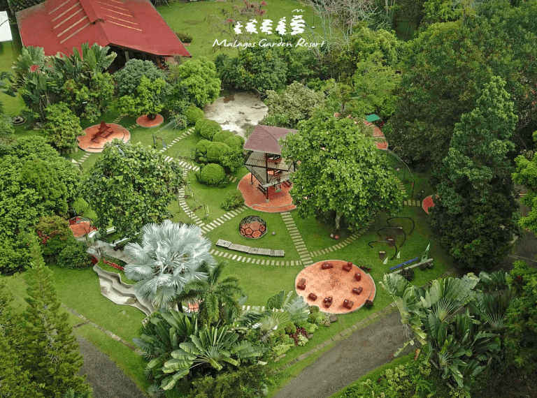
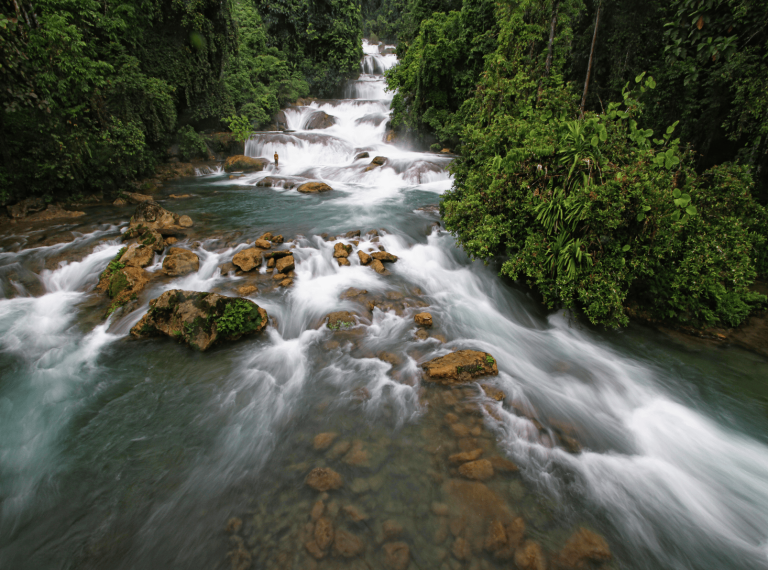
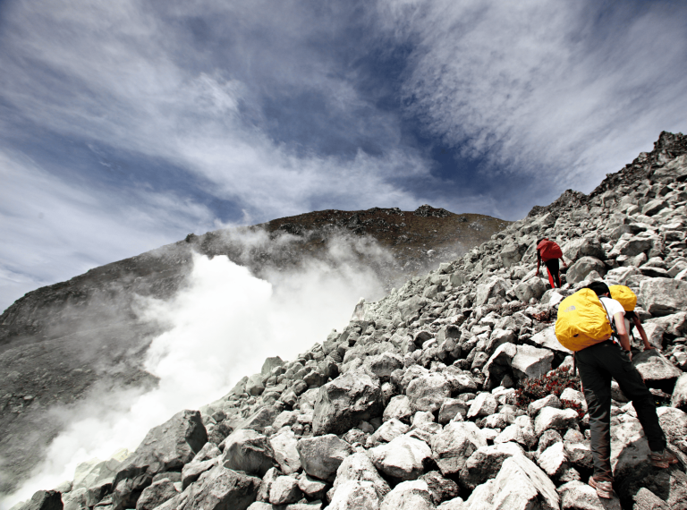

Popular Destinations
Discover the breathtaking wonders of Davao.

Pujada Bay
Pujada Bay is known for its crystal-clear waters, beautiful islands, and rich marine biodiversity. Visitors can enjoy island hopping, swimming, and breathtaking coastal scenery.
Location: Mati City, Davao Oriental

Malagos Garden Resort
Malagos Garden Resort is a nature destination featuring lush gardens, bird encounters, and chocolate-related attractions. It offers visitors a relaxing experience surrounded by greenery and opportunities to learn about local nature and cacao production.
Location: Baguio District, Davao City

Aliwagwag Falls
Aliwagwag Falls is famous for its spectacular series of cascading waterfalls surrounded by lush forest. Its natural beauty makes it a popular destination for sightseeing, photography, and nature trips.
Location: Cateel, Davao Oriental

Mount Apo
Mount Apo is the highest mountain in the Philippines, rising to approximately 2,954 meters above sea level. It is known for its rich biodiversity, rugged terrain, and challenging trekking routes that attract adventurous visitors.
Location: Davao del Sur and Cotabato